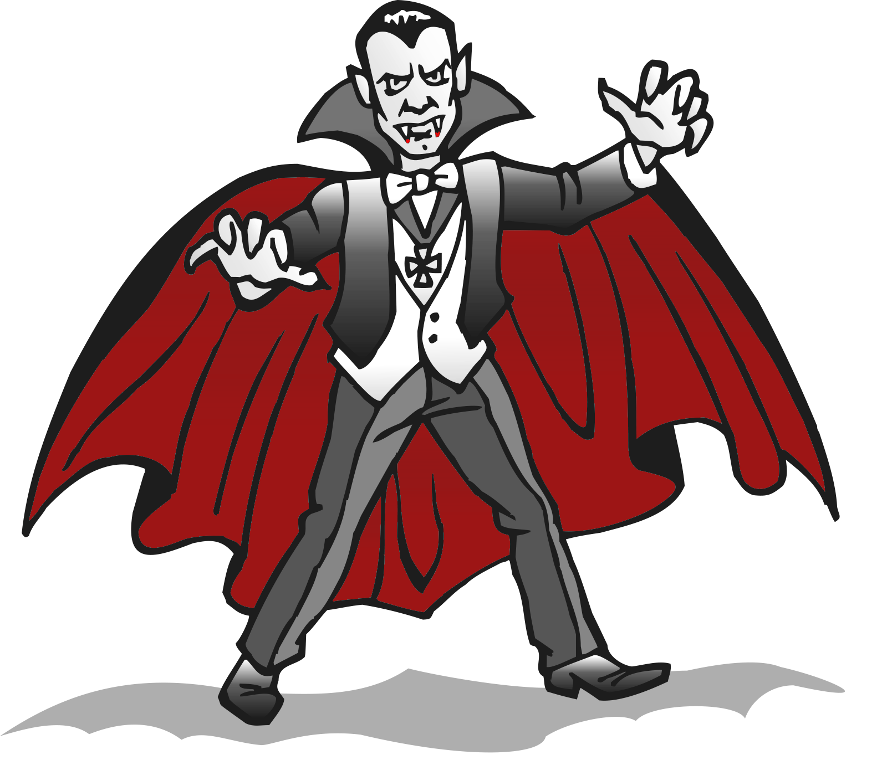
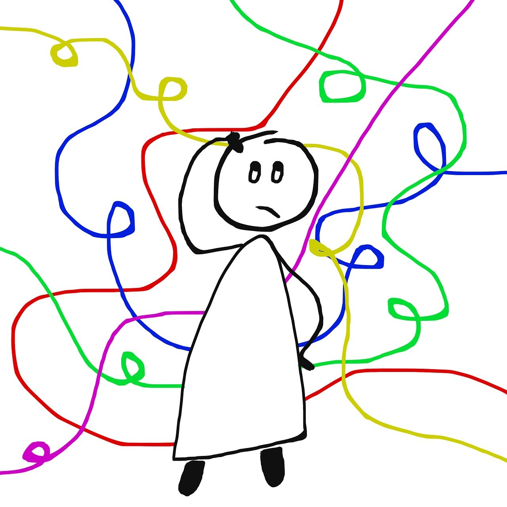
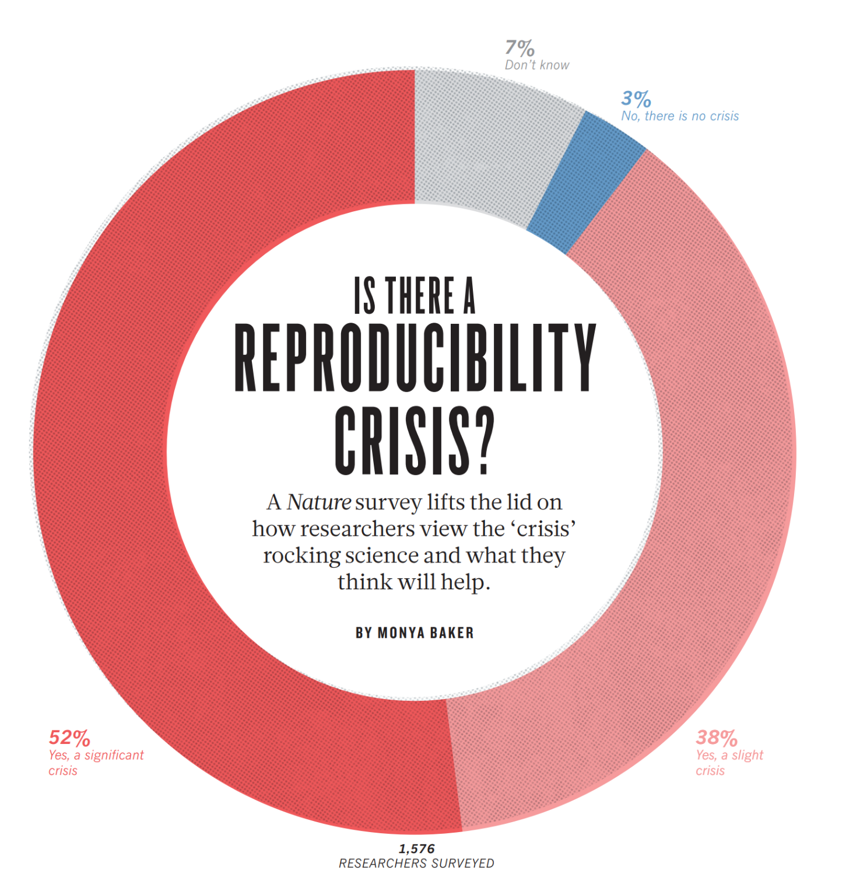

Un cuento de Vampiros y Ciencia

Lógica, probabilidad y heurística son tres ideas centrales en la historia del intelecto humano. A la aspiración de la lógica aristotélica se agregó a mediados del siglo XVII la teoría de las probabilidades, que matizó la certeza de la lógica al aportar una teoría con una postura más modesta en torno a la racionalidad. Su aparición ayudó a reconocer la existencia de una incertidumbre fundamental en la conducta humana. Einstein (1905) revaloró la intuición, con su uso de la noción de heurística,como recurso que recurre a la imaginación creativa y a la perspicacia de los seres humanos para descubrir cosas nuevas. Desde entonces el término ha florecido con matices diversos en todos los campos de la ciencia, la tecnología y las artes. Usamos estas tres herramientas para decidir científicamente, a veces suponiendo que reproducen la forma como opera nuestra mente. Veremos a continuación un ejemplo a este respecto que nos comparte McElreath (2020). Se trata del hipotético ejemplo de la prueba de sangre para vampirismo, que nos ayudaría a decidir si alguien es mortal o vampiro.
Inicia por pedirnos imaginar que hay un análisis de sangre que detecta correctamente 95% de las veces, la afiliación de un individuo al linaje del conde Drácula y los inmortales vampiros. En notación matemática:
\[ {Pr[resultado~ positivo~de~la~prueba|vampiro]= 0.95} \]
Es una prueba muy precisa, casi siempre identificando vampiros reales. Sin embargo, también falla a veces y reporta falsos positivos. Es así que el uno por ciento de las pruebas realizadas diagnostican incorrectamente a simples mortales como vampiros:
\[ {Pr[resultado~positivo~de~la~prueba|mortal]= 0.01} \]
La última pieza de información que necesitamos es saber que los vampiros en realidad son bastante raros. Sólo el 0.1% de la población lo es (esta es la que llamamos probabilidad a priori), lo que anotamos así:
\[ {Pr[vampiro]= 0.001} \]
A partir de este conocimiento científico, supongamos que un amigo da positivo en el test de vampirismo.
El enfoque de investigación formal empezaría por usar el teorema de Bayes para deducir la probabilidad \({Pr(vampiro|positivo)}\), lo que en cierta forma implica “invertir la probabilidad”, pues lo que ahora sabemos es el valor de \({Pr(positivo|vampiro)}\). El cálculo puede presentarse como:
\[ Pr[vampiro|positivo]= \frac{Pr[positivo|vampiro]\times Pr[vampiro]}{Pr[positivo]} \]
en donde \({Pr[positivo]}\) es la probabilidad promedio de los resultados positivos de la prueba, es decir,
\[ Pr[positivo]= Pr[positivo|vampiro]\times Pr[vampiro] + Pr[positivo|mortal] \times ({1 − Pr[vampiro]}) \]
Todo esto lo podemos hacer en R.
Primero tomamos nota de lo que ya sabemos a partir del enunciado anterior, ¡a priori! Por favor proporciona los datos requeridos en el recuadro siguiente.
Si queremos verificar los datos podemos verlos simplemente anotando el nombre de la tabla, en este caso: pr
Si quisieras presentarla como una bonita tabla en tu reporte será mejor usar algo comoflextable o gt
Tomamos la fórmula de Bayes para invertir la probabilidad, pues queremos saber qué está pasando cuando tenemos la fortuna o desgracia de toparnos con un resultado positivo en la prueba de sangre:
Esto equivale a preguntarnos, dado que ya vimos el resultado científico que significa la prueba de sangre positiva, ¿será vampiro el sujeto de quien se obtuvo esa muestra?. Esta es una manera de estimar la probabilidad de que el amigo sea en realidad un vampiro, dado el conocimiento y la evidencia que tenemos a la mano.
\[ Pr[vampiro|positivo] \]

Quizás para ayudar a apreciar lo que todo esto significa conviene recordar la frase que se atribuye al economista John Maynard Keynes:
Cuando las circunstancias cambian, yo cambio de opinión. ¿Tú que haces?”
Si hubiera nueva evidencia disponible, el proceso se aplicaría en secuencia. Lo que lleva a la siguiente expresión que sugiere como se puede generalizar este proceso de razonamiento. Pero por ahora ya no ahondaremos más en esto.
\[ Pr[H|E_1,E_2] = \frac{Pr[E_2|H,E_1] \times Pr[H|E_1]} {Pr[E_2|E_1]} \]
Este es un resultado muy importante. Exactamente así, o algo muy parecido, es el procedimiento que se sigue en la realidad al efectuar pruebas diagnósticas: las pruebas de PCR, antígeno o anticuerpos para SarsCov-2, la prueba del VIH la del DNA en un perfil criminal, etc. La prueba de significancia estadística, ¿entrará en este mismo marco conceptual?.
Quizás ayude a mejorar la intuición que tenemos de las cosas el considerar que siempre que la condición de interés sea muy rara, desarrollar una prueba excelente, capaz de diagnosticar bien todos los casos verdaderos (aunque inevitablemente produzca también algunos falsos positivos), puede no ser garantía suficiente de que un resultado positivo en general conlleve información categóricamente significativa.
La razón es que usualmente resulta inevitable tener falsos positivos y por simple aritmética, esos casos serán la mayoría de los resultados que tendremos, incluso si todos los verdaderos positivos fueran detectados correctamente.
La regla de Bayes es útil aquí, aunque, como dice McElreath, no es la única manera de razonar en este caso. Podríamos cuestionar que la ecuación que usamos aquí salio de la nada; aunque quizás la recuerdes de algún curso previo, de alguna charla interesante por ahí o incluso de lo que viste con Rosario ¡hace unas semanas!
Quizás el ejemplo puede verse en forma más intuitiva utilizando otra narrativa para comprender lo que está ocurriendo. Digamos que en lugar de informar sobre las probabilidades, como hicimos arriba, te digo lo siguiente:
- En una población de 100,000 personas, 100 son vampiros.
- De los 100 que son vampiros 95 darán positivo en la prueba de vampirismo.
- De los 99,900 simples mortales restantes, 999 darán positivo a la prueba de vampirismo.
Ahora piensa en esto, si hacemos pruebas a las 100,000 personas, ¿qué proporción de los que dan positivo en las pruebas de vampirismo son realmente vampiros?
Muchas personas, aunque ciertamente no todas, encuentran esta forma de contar la historia mucho más fácil de comprender. Sigamos por este camino.
Anota los valores que consideres adecuados en el recuadro
De este total de pruebas positivas, sabemos que sólo 95 provienen verdaderamente de vampiros, lo que nos lleva sencillamente a preguntarnos sobre la fracción que significa esa cantidad de vampiros entre la totalidad de pruebas positivas.
¿Qué valor obtuviste?
Si todo marcho bien deberías tener exactamente la misma respuesta que por el camino bayesiano que encontramos antes. La diferencia es que ahora, no tuvimos que recordar la “formula mágica” de Bayes, nada más tuvimos que imaginar la situación de otra manera y simplemente contar y pensar con calma.
Esta forma de presentar el problema mediante el “conteo de los actores” en lugar de recurrir a probabilidades, suele denominarse formato de frecuencia o frecuencias naturales. En todo caso, lo importante es apreciar que el razonamiento puede beneficiarse de adoptar formas de razonamiento frugales e intuitivas (Gigerenzer y Gray 2017; Hicks et al. 2012).
Las razones propuestas para explicar el por qué el formato de frecuencia ayuda a la gente a intuir el enfoque correcto siguen siendo polémicas. Podría ser que de entrada sólo podemos encontrarnos con conteos en el mundo real. Quizás sea cierto que nadie ha visto nunca una probabilidad andando por ahí. Independientemente de la explicación de este fenómeno, podemos explotarlo en muchas situaciones cotidianas.
Los eventos muestreados en el análisis de las distribuciones de probabilidades de modelos estadísticos en algún análisis de datos, son los valores de los parámetros. La mayoría de los parámetros no tienen una “materialización” empírica exacta.
El formalismo bayesiano trata las distribuciones de los parámetros como una plausibilidad relativa, no como un proceso aleatorio que ocurre en el mundo físico. En cualquier caso, la aleatoriedad es siempre una propiedad de la información, nunca del mundo real. Para continuar explorando esta idea puede interesarte los textos de Gigerenzer sobre la importancia de la intuición.
Estadística para mejorar la ciencia
El ejemplo del vampirismo que acabamos de ver tiene la misma estructura lógica que muchos problemas de detección considerando que:
- Hay algún estado binario al que no tenemos acceso.
- Observamos un indicio imperfecto del estado oculto.
- (Deberíamos/podríamos) usar el teorema de Bayes para deducir lógicamente el impacto del indicio en nuestra incertidumbre (aunque ve lo que salió en el periódico)
La inferencia científica puede enmarcase en términos similares:
- Una hipótesis es verdadera o falsa, pero no lo sabemos todavía;
- Obtenemos un indicio estadístico de la falsedad de la hipótesis;
- Podemos utilizar el teorema de Bayes para deducir lógicamente el impacto del indicio en el estado de la hipótesis.
Es el tercer paso el que casi nunca se hace. Sin debatir por lo pronto si debemos o no usar a Bayes, consideremos por un momento la idea como un ejemplo de juguete.
Resultados posibles de un estudio científico
Probabilidad de acertar
Supongamos que la probabilidad de obtener un hallazgo positivo, cuando la hipótesis postulada es cierta, es \({Pr[señal~detectada | verdadera]=Pr[d | H]= 0.95}\).
Ese es lo que se suele llamar la potencia de la prueba.
Probabilidad de errar
Supongamos que la probabilidad de un hallazgo positivo, cuando una hipótesis es falsa, es \({Pr[señal~detectada|falsa]= Pr[d | \neg H]= 0.05}\).
Esa es la tasa de falsos positivos, digamos 5%, de la prueba de significancia que usamos convencionalmente.
¿Cuál será el estado real del mundo?
Finalmente, tenemos que establecer la tasa base con la que ocurren las hipótesis que son verdaderas. Supongamos, por ejemplo, que 1 de cada 100 hipótesis resulta ser verdadera. Entonces \({Pr[verdadero]= Pr(H) = 0.01}\).
En realidad nadie conoce este valor ni se ve posible conocerlo, pero la historia de la ciencia sugiere que es pequeño.
Probabilidad de haber acertado con una hipótesis
Se trata de una proposición que hemos aventurado para explicar algo, que resulta ser cierta y que hemos obtenido alguna prueba que calificamos de positiva para reconocerla . Para averiguar esto hay que calcular la probabilidad a posteriori:
\[ \begin{align*} Pr[Hipótesis|detección]&= \frac{Pr[detección|Hipótesis] \cdot Pr(Hipótesis)} {Pr(detección)} =\\ & = \frac{Pr[d | H] \cdot Pr[H)} {Pr(d|H] \cdot Pr[H]+ Pr[d | \neg H] \cdot Pr(\neg H)} = Pr[H|d]\\ \end{align*} \]
Al substituir los valores imaginados y hacer los cálculos obtenemos una esimación de que tan probable es que sea cierta la hipótesis propuesta, dado que observamos un resultado positivo (\({Pr[H|d]}\)).
¿Qué valor obtuviste? Observa que este valor muestra el mismo patrón de baja tasa de base que se aplica en las pruebas médicas (y también en nuestro ejemplo de vampiros).

Una manera de explorar lo que puede pasar en distintos escenarios asumiendo un razonamiento específico, nos da oportunidad de valorar la utilidad de hacer un escript, algoritmo o programa. Así podemos automatizar una tarea repetitiva y potencialmente aburrida para ver las implicaciones de la idea en todo tipo de situaciones. Quizás podríamos considerarlo semejante a lo que Einstein llamaba experimento pensado. Veamos como hacerlo.
Hemos definido un programa como una función en R. Esta función puede tomar datos y procesarlos de acuerdo con la lógica que le hemos especificado.
Ahora podemos experimentar para tener una idea aproximada de lo que está pasando.
- Elegimos una serie de valores de interés (cada uno sería un escenario)
- Preparamos un espacio en la memoria para anotar los resultados.
- Veamos los resultados del experimento con ayuda de una gráfica.

Una investigación muy exigente que reduce la detección de falsos positivos a 1%, ¿hasta cuánto nos permite llevar la probabilidad posterior de descubrimientos exitosos?
Podemos pensar que lo que hemos hecho hasta aquí es prácticamente un juego, pero ¿qué tan cercano podría ser a lo que ocurre en la vida real? y si fuera una razonable aproximación ¿a qué nos conduce?
¿Qué conclusiones surgen de esta experiencia?
Crisis de reproducibilidad


Fuente: Stoddart, C. (2016). Is there a reproducibility crisis in science?. Nature
La falta de reproducibilidad de los experimentos se traduce en artículos que son cuestionados y se ven forzados a retirarse. Claro, no es la única razón para retirar un artículo, pero si la más frecuente. A fines del año pasado salió esta noticia en Nature.


Sin duda la forma como hemos optado por hacer ciencia está teniendo problemas que debemos afrontar. La cuestión es que podemos o más bien que debemos hacer para enfrentarlos productivamente y así producir una ciencia mejor.
La búsqueda de la verdad siempre debería prevalecer sobre el deseo defensivo del ego de tener la razón. Esto no es fácil, porque a la mayoría de la gente le resulta difícil admitir que se equivoca. Y es precisamente por esto por lo que la ciencia resulta tan liberadora. Provee un marco de trabajo para la autocorrección, porque el conocimiento científico siempre es provisional. Un hecho científico aceptado hoy puede ser refutado mañana. Por tanto, el método científico engendra humildad epistemológica.

Prerregistro y prepublicación
El enfoque de modelación
La propuesta que seguiremos en el Módulo 3 se basa en traducir situaciones reales en abstracciones que escribimos como modelos estadísticos. De esta manera buscamos generar expresiones matemáticas que dan cuenta de nuestras concepciones sobre cómo funcionan aspectos concretos de la naturaleza (proposición causal). Es así que nos planteamos generar series de números idealizados por el modelo que podemos comparar con series de números observamos directamente de la naturaleza. Sí estas dos series de números se parecen lo suficiente, seguramente nos sentiremos con confianza como para pensar que nuestro modelo es útil para describir el comportamiento del segmento de la naturaleza que elegimos abstraer.

El modelo que contiene todas las variables explicativas que proponemos tienen que ver con el fenómeno que estamos analizando lo llamaremos modelo completo. Tiene todos los parámetros posibles de acuerdo con el diseño del estudio, usualmente al menos un término por cada grupo experimental (tratamiento). En general el método para llegar a un segundo modelo es postular restricciones (supuestos que especifican valores particulares) sobre los parámetros del primer modelo.
Las restricciones usualmente son nuestra(s) hipótesis nula(s) y en ese caso las usamos para eliminar algunos parámetros del conjunto usado en el modelo completo, equivalente a dar por hecho que el parámetro correspondiente es 0. Naturalmente llamaremos al modelo resultante simplemente el modelo restringido o modelo reducido.

Consideremos el ejemplo siguiente. Se trata de un grupo de hojas a las que medimos el contenido de nitrógeno. En este estudio no sabemos ni estamos postulando ninguna forma de obtener predicciones distintas para subgrupos de hojas. El modelo correspondiente es:
¿Podrías explicar esta ecuación?
\[ y_{i} = \mu + \varepsilon_{i} \]

Una idea simple para comparar los modelos que acabamos de ver es tomar la diferencia en el error asociado con cada modelo. Como esta diferencia estará afectada por la escala de medición del fenómeno estudiado, conviene normalizarla, es decir expresarla como un*error relativo. Para obtenerlo sólo habremos de dividir por el error más pequeño que podríamos tener: la del modelo completo. Llamaremos a este valor, provisionalmente, el índice proporcional de error (IPE**). Un índice grande corresponde con modelos que difieren mucho en su ajuste a los datos. Por tanto, estaremos ante la necesidad de elegir alguno de los dos.
Al considerar modelos de distinta complejidad debemos pensar en alguna manera de incorporar ese aspecto en nuestro análisis. Es así que llegamos a la noción de grados de libertad que la expresamos como el número de observaciones menos el número de parámetros en un modelo.
Con todo esto, el cálculo del índice proporcional de error (IPE) se puede formular para eliminar el efecto de la complejidad de los modelos que se comparan. El resultado es este:
\[ IPE=\frac{\frac{(E_{C}-E_{R})}{gl_{C}-gl_{R}}}{\frac{E_{C}}{gl_{C}}} \\ \text{ si podemos suponer normalidad en la variable de respuesta }\\ \sim F_{(gl_{C}-gl_{R}), gl_{C}} \]
Así, el estadístico de prueba que hemos construido es el IPE. Si suponemos que las variables son adecuadamente descritas por un modelo de probabilidades normal (Gaussiano), entones el IPE se distribuirá como una función de probabilidades F. Por cierto, si el experimento sólo compara dos medias entonces se cumple que los estadísticos t y F refieren en última instancia a la misma distribución de probabilidades: \(F = t^{2}\)
- El análisis de datos la mayoría de las veces, se realiza comparando distintos modelos.
- Cada modelo corresponde con alguna hipótesis particular.
- Los distintos modelos abarcan las varias hipótesis nulas que podrían plantearse, H0, pero también pueden incluir cualquiera de las hipótesis alternativa, HA, que nos interese valorar.
- El procesos de selección de modelos y las características de los modelos que finalmente elijamos serán los protagonistas de la historia que habremos de narrar en el reporte de resultados y discusión de hallazgos.
ANOVA
Conceptos básicos (modelo de una vía, un criterio, completamente aleatorizado)
Hay situaciones en las que la información que tenemos para predecir una respuesta la tenemos en forma cualitativa, incluso la presencia o ausencia de una categoría. Una variable categórica es una medición discreta y las clases no tienen ningún orden particular. Por ejemplo, consideremos que entre los antropoides algunas especies son simios, mientras que otras son monos del Nuevo Mundo. Podríamos preguntarnos cómo deberían variar las predicciones cuando la especie es un simio en lugar de un mono. El grupo taxonómico es una variable categórica, porque ninguna especie puede ser mitad simio y mitad mono (discreción), y no hay ningún sentido en el que uno sea más grande o más pequeño que el otro (desorden). Otros ejemplos comunes de variables categóricas son:
- Sexo: macho, hembra
- Estado de desarrollo: lactante, juvenil, adulto
- Región geográfica: África, Europa, Melanesia
Algunos de ustedes ya sabrán que variables como esta, llamadas rutinariamente factores, pueden ser fácilmente incluidas en los modelos lineales. Pero lo que no resulta tan intuitivo es la forma cómo se representan estas variables en un modelo. El ordenador hace todo el trabajo por nosotros, ocultando la maquinaria.
La hipótesis nula en un análisis de la varianza tipo I común es:
\[ H_0: m_1 = m_2 = m_3 = ... = m_k \]
Por cierto esta es una prueba “ómnibus”, es decir ¡prueba todo (la igualdad de todas las medias) de un jalón!
Para ver como es que opera el anova veamos el ejemplo que sigue. Considera un solo factor, “\(f\)”, con dos niveles.
Pongamos estos datos en una gráfica simple, según el orden en el que fueron obtenidas las mediciones. Lo primero que haremos es definir la tabla de datos anova.data, como espacio de trabajo. Haremos esto con la función attach(). Esto hace que las variables contenidas en la tabla se puedan llamar directamente sin tener que anteponer el nombre de la estructura que las contiene. Esto es conveniente, pero si olvidamos regresar al espacio general de trabajo, con la función detach(), podemos encontrarnos con situaciones algo extrañas. En caso de que eso ocurra, resulta útil la función search(), que muestra los espacios de trabajo activos.
Ahora incorporemos la información del factor \(f\). Para esto hay que calcular los promedios de “y” que corresponden a los niveles de \(f\)
Grafiquemos esta nueva estructura de datos.
Si las dos medias fueran iguales ¿cómo compararían estas dos gráficas?
Esta diferencia se asocia con la siguiente gráfica:
Ahora la suma de estas líneas verticales es
Estas tres formas de calcular las distancias entre datos y promedios se asocia con fuentes de variación
- variaciones en las observaciones o error total
- variaciones intrínsecas de los sujetos o error residual (componente aleatorio/efecto aleatorio)
- variaciones por efecto del factor causal o error del modelo (componente sistemático/efecto fijo)
En el cuadro de análisis de varianza se suele etiquetar a los componentes de error de acuerdo con su fuente. Se les acompaña con los grados de libertad, la suma de cuadrados de las distancias que mostré en las tres gráficas anteriores y luego los llamados cuadrados medios. Para referencia podemos pedirle a R que nos reporte el cuadro de ANOVA de este modelo.
DAG de un diseño experimental simple
Un experimento con asignación de tratamientos en forma completamente al azar, garantiza al máximo posible las vías de influencias ocultas o inadvertidas. Por diseño, la respuesta de las unidades experimentales, Y, al tratamiento T sólo tiene a la asignación aleatoria A como única causa que antecede al tratamiento. Esto lo podemos representar con el diagrama acíclico dirigido, DAG, siguiente:
\[ \fbox{A} \rightarrow T \rightarrow Y \]
En este DAG, el marco que rodea a la A indica aleatorización, y como sugiere el diagrama, es la única causa que actúa sobre el tratamiento. Si hubiera una vía de influencia alternativa (backdoor), a través de alguna tercera variable como podría ser en un caso de germinación de semillas, la luminosidad del sitio o el grado de humedad en el sustrato; entonces, la aleatorización no sería el único factor que influiría sobre el tratamiento. El recuadro alrededor de A (el proceso de aleatorización) indica que no existen otros factores actuando sobre T, es decir, A es una influencia puramente estocástica. Esta idea y el proceso de realización de un experimento controlado con aleatorización, da cuenta con toda claridad del valor de esta forma de realizar estudios para desentrañar relaciones de causalidad.
Este DAG nos conduce al modelo linear siguiente
\[ y = \mu + T + \varepsilon \]
En donde y son las mediciones de la variable Y en respuesta al efecto de T, \(\mu\) es un valor de referencia general (tradicionalmente la media general de la variable Y, aunque puede elegirse cualquier otro valor de referencia que convenga al estudio) y la épsilon da cuenta del efecto aleatorio inducido por \(\fbox{A}\), por lo que es necesario postular una distribución de probabilidades apropiada para caracterizar su comportamiento.
La tradición de prueba de hipótesis
El planteamiento de la prueba de significancia estadística de hipótesis se pueden encontrar ya en el siglo XIX, su formalización teórica realmente ocurre en los años 20 y 30 del siglo XX con las publicaciones de Sir Ronald Fisher, Jerzy Neyman y Egon Pearson.
Entre estos autores existieron diferencias filosóficas y conceptuales entre sus planteamientos y posturas. En especial Fisher y Neyman sostuvieron acres debates que sólo se interrumpieron con el fallecimiento de Fisher en 1962. No obstante el debate continua hasta hoy.
El resultado es que el uso actual de la prueba estadística de hipótesis se ha conformado como un extraño híbrido surgido de una mezcla más o menos ecléctica de las dos formas de pensar y no tanto una teoría coherente sobre la prueba de hipótesis.
El procedimiento
El objetivo de una prueba de significancia es hacer inferencias sobre un parámetro que el investigador concibe asociado a un atributo numérico relevante de la población que define su objetivo de investigación. El procedimiento utiliza como base los datos de una muestra extraída de esa población. El enfoque se opera específicamente como un instrumento para excluir un valor o una gama de valores específicos como plausibles para el parámetro.
El paso a paso del formalismo de prueba de hipótesis
- Construir un modelo estadístico. Se trata de un conjunto de supuestos sobre las variables de interés.
- Especificar la hipótesis nula.
- Definir un estadístico de contraste (frecuentemente llamada “la prueba estadística”).
- Identificar la distribución del estadístico de contraste bajo los supuestos del modelo.
- Calcular, bajo el supuesto de la hipótesis nula, el valor del estadístico de contraste en la muestra observada.
- Calcular la probabilidad de tener un valor del estadístico como el resultante o un valor más extremo en la distribución de referencia (el famosos valor p).
- Aceptar o rechazar la hipótesis nula. Si el valor p es menor que el criterio α de significancia (especificado a priori), se rechaza la hipótesis nula, en el caso contrario se acepta o por lo menos no se rechaza (por lo pronto).
Rechazar la hipótesis nula es algo que quizás produce poca tensión emocional, quizás hasta un alivio, finalmente, el investigador sospecha (desea mostrar) que lo interesante está en otra parte, en su juego de hipótesis alternativas.
¿Es este procedimiento afín al falsacionismo Popperiano?.
Para interpretar correctamente un valor p se necesita tener claro que se opera dentro de una marco conceptual frecuentista. Esto lleva a que se conciba a los parámetros del modelo estadístico como constantes en la población objetivo (valor fijo que nunca se conoce en realidad).
Además se asume que, al menos conceptualmente, sería posible repetir el experimento un número infinito de veces. También se asume que siempre se está muestreando la misma población objetivo (universo muestral) así que los parámetros tienen el mismo valor, pero las muestras fluctúan aleatoriamente.
Bajo estos supuestos es aceptable considerar que el estadístico de prueba se distribuye de acuerdo con el modelo de probabilidades propuesto para construir el contraste y por lo tanto da cuenta de las variaciones esperadas entre las diferentes repeticiones del experimento.
En la aproximación tradicional a la contrastación estadística de hipótesis (frecuentista) se parte de la formulación de proposiciones hipotéticas que son descritas con referencia a alguna distribución de probabilidades.
En este marco conceptual, un componente es la llamada hipótesis nula (\(H_{0}\)). Se concibe como un planteamiento que asume la ausencia de efecto de los “factores explicativos”.
En contraste se propone una o más hipótesis alternativas (\(H_{1...n}\)), en las que se valora algún o algunos efectos de los “factores explicativos”. La proposición hipotética que hacemos se traduce en valores que podemos comparar con un conjunto de valores a los que consideramos observados. La diferencia entre estos dos conjuntos de valores nos permiten valorar la factibilidad de nuestra proposición.

En la práctica, suele ocurrir que se concentre la atención en la hipótesis nula expresada con la gran simplicidad que implica la ausencia de efectos y se proceda con menor rigurosidad el análisis de la hipótesis alternativa, la que suele procesarse en forma más bien exploratoria mediante procedimientos de comparaciones múltiples.
Críticas
Entre las críticas que se han hecho al procedimiento clásico de prueba de hipótesis está la que señala que el valor p, al excluir el valor de cero como valor plausible para el parámetro, no aporta información completa sobre los valores que sí son plausibles. Esto implica que la significancia estadística no implica relevancia práctica.
¿Cómo interpretas esta afirmación?
En el mismo razonamiento, un “valor de p extremadamente significativo” no hace otra cosa que excluir el cero como valor plausible para el parámetro no precisamente sobre la calidad del hallazgo.
Otra crítica señala que interpretar el valor p en términos de evidencia en contra de la hipótesis nula (siguiendo el pensamiento de Fisher) o la plausibilidad de que la hipótesis nula sea falsa a veces se expresan equivocadamente como la probabilidad de que la hipótesis nula sea falsa en consideración de la evidencia (E) disponible. Al plantearlo así, formalmente se enuncia como \(P(H_{0}|E)\). Pero esto no es apropiado, formalmente resulta ser una inconsistencia en la lógica del planteamiento.
¿Puedes reconocer esta inconsistencia?
La inconsistencia está en que, en primer lugar como dije arriba, el valor p se define dentro del marco frecuentista y se concibe que los parámetros son valores constantes, aunque desconocidos (¡supuesto estadístico de efectos fijos!). No se trata de los parámetros de alguna distribución de probabilidades (observada o no). Por tanto, no tiene sentido asignar probabilidades a los distintos valores estimados del parámetro.
Además, el valor p se calcula bajo el supuesto de que la hipótesis nula es cierta; esto hace imposible, por construcción, interpretarlo como la probabilidad de que la hipótesis alternativa sea cierta. La probabilidad a la que se refiere el valor p guarda más relación con la probabilidad inversa, \(P(E|H{0})\). ¿Qué tan probable sería tener una muestra como la que tenemos enfrente, si la hipótesis nula considerada fuera cierta?. Esto se conoce como la verosimilitud, es decir, la probabilidad de observar los datos que se han obtenido en un estudio suponiendo que los atributos del modelo fueran ciertos. La verosimilitud valora a la muestra como un resultado condicional a los supuestos hechos en el modelo estadístico y en este caso, la hipótesis nula.
Sin embargo, la probabilidad que realmente interesa es la anteriormente mencionada \(P(H_{0}|E)\). Aunque no está definida dentro del marco frecuentista, en el marco Bayesiano sí se define. Las probabilidades \(P(E|H_{0})\) y \(P(H_{0}|E)\) no son iguales.
¿Recuerdas qué representa cada uno de ellas?
¿Cuál es la relación entre ambas?
Otra crítica interesante surge de la llamada paradoja de Lindley (1957), quien mostró, con una formulación Bayesiana, que existe la posibilidad de tener datos congruentes con rechazar una hipótesis nula con un bajo valor p y que al mismo tiempo llevan a una probabilidad posterior alta.
Encontró que es perfectamente posible, a partir de los mismos datos E, obtener al mismo tiempo una \(P(E|H_{0})\) = 0.05 (baja probabilidad de obtener una muestra como la que se observó, si \(H_{0}\) fuera cierta) y \(P(H_{0}|E)\) = 0.95 (fuerte evidencia en favor de \(H_{0}\)). Este resultado contradictorio permite ver lo cuestionable que resulta interpretar el valor p como evidencia en contra de la hipótesis nula.
Se ha contra argumentado que la paradoja requiere muestras grandes para manifestarse, y se oponen a los supuestos adicionales que requiere el análisis Bayesiano. Se ha defendido que bajo condiciones razonables, un bajo valor p generalmente implica una baja probabilidad posterior, es decir, poca evidencia para la hipótesis nula. Sin embargo, a pesar de esta defensa al enfoque clásico, se ha encontrado que los valores p sistemáticamente sobrestiman la evidencia en contra de la hipótesis nula.
En resumen, el valor mismo de p, resultado de una prueba clásica de hipótesis, no aporta mucha información de interés para los investigadores. En caso de optar por la hipótesis alternativa con base en la p, no se favorece llegar a ninguna conclusión sustancial sobre posibles explicaciones alternativas, lo único que queda claro es que la nula probablemente es falsa.
Para que quede claro, hay que insistir en que si el valor p es juzgado significativo, únicamente nos inclina a excluir un solo valor como estimador plausible para el parámetro. Peor aún, el significado de plausible en la última expresión tiene una relación nebulosa con la probabilidad que sí le interesa a los investigadores: la probabilidad posterior de que la hipótesis nula sea cierta a la luz de la evidencia recopilada \(P(H_{0}|E)\).
Remedios y alternativas para la prueba estadística de la hipótesis nula
Para enfrentar algunos de los inconvenientes del enfoque clásico de prueba de hipótesis se ha recomendado ahora sustituir el valor p por un intervalo de confianza que abarca un conjunto de valores que permiten valorar si es razonable rechazar la hipótesis nula y además, en caso contrario proporciona una gama de valores que caracterizan al parámetro, lo que resulta de mucho interés.
La práctica de presentar intervalos de confianza, posiblemente en conjunto con p, constituye una respuesta a la crítica de que sólo se excluye un valor como valor plausible para el parámetro. Además, hacer esto proporciona información sobre significancia. Si el intervalo no incluye el valor de cero, entonces se declararía el resultado como estadísticamente significativo. El intervalo informa también sobre el posible tamaño del efecto.
A la luz de las críticas, Muchos autores ven necesario actualmente adoptar el marco Bayesiano para enfrentar las deficiencias del enfoque clásico. También queda claro que el falsacionismo no resulta ser un camino inequívoco, cosa que ya advertía el mismo Popper, aunque no al extremo de la tesis Duhem-Quine (Kemeny 1952), que sostiene la imposibilidad de hacer experimentos cruciales.
Potencia de la prueba
En la práctica, la potencia de la prueba depende del grado de dispersión en los datos. Si se está asumiendo un modelo de probabilidades Gaussiano (distribución normal), el factor de dispersión o escala se relaciona con la varianza. Por lo tanto, es usual notar que el mismo cálculo del error estándar, \(s_{e}=\frac{\sigma}{\sqrt{n}}\), sugiere la solución.

- Se puede incrementar el tamaño de muestra, n,

- Aumentar la precisión con la que se estima \(\sigma^2\),
Es interesante apreciar, que la búsqueda de un tamaño de muestra apropiado para un estudio que estemos planeando, se puede lograr muy eficazmente haciendo simulaciones como las que hemos estado viendo en este bloque del curso. A través de este camino y haciendo el esfuerzo de especificar hipótesis alternativas relevantes se pueden resolver preguntas como:
- ¿Cuál es el tamaño de muestra necesario para detectar una cierta diferencia en lo que medimos?
- ¿Cuál es la diferencia detectable dada una n o una potencia de la prueba (\(1-\beta\))?
- ¿Cuál es la potencia (\(1-\beta\)) dado un n y cierta diferencia con \(H_{a}\) de interés?
Quiz: Prueba estadística de hipótesis
Participa: vevox.app ID: 125-688-362

Disposición de tratamientos e intereses sobre los factores
Efectos fijos
Quizás la forma más simple de identificar las variables explicativas que tienen efectos fijos es pensar en ellas como variables cuyos niveles identifican en forma completa las condiciones de interés para el investigador. Por ejemplo, en el caso de un experimento que analiza el desempeño de larvas de mariposa que toman una dieta rica en proteínas y al mismo tiempo están expuestas a la presencia o no de un alcaloide. Estamos interesados precisamente en esas dietas y en la presencia o no del alcaloide. Estos dos factores son fijos. Es el tipo de variables que normalmente consideramos en nuestros objetivos de investigación. Se asume que su identificación y definición es completa, se asume que no hay más niveles de interés que los definidos y por lo tanto el modelo resultante no puede utilizarse para predecir fuera del ámbito de esas definiciones.
Efectos aleatorios
Las variables de efectos aleatorios surgen cuando se considera que el factor considerado no es sino una muestra de los posibles resultados que se pueden obtener de muestrear la condición que caracteriza el factor. Por ejemplo, si en un experimento para explorar la germinación de Bouteloua gracilis bajo distintas condiciones de temperatura en campo, se distribuyen las semillas en varios sitios de una zona de interés. Los aprecia que hay básicamente dos tipos de ambiente, suelos arenosos y suelos con algo de grava, así que se eligen 5 sitios en cada condición, y en cada uno de ellos se ponen a prueba dos tratamientos, “pisoteo por ganado” y “sin pisoteo por ganado”. Los 10 sitios elegidos estarían definidos como de efectos aleatorios, pues podemos ver que los niveles elegidos son en realidad una muestra de las posibles condiciones que prevalecen en la zona de estudio. Además, claramente el interés de la predicción es ser generalizable para toda la zona. A veces podemos pensar en esta forma de proceder como equivalente a un muestreo estratificado, en este caso, los tipos de ambiente son los estratos. No es el caso del tratamiento pisoteo. aprovechando podemos ver que en este experimento tendremos un mínimo de 4 combinaciones experimentales, y que ese arreglo mínimo se repetirá 5 veces, así que requeriremos 20 unidades experimentales para realizar el estudio.

Anidamiento vs. cruzamiento
La anidación o el cruzamiento es otra característica de los datos, o más bien del diseño experimental. Hablamos de que un conjunto de variables están cruzadas en un diseño experimental cuando todos los posibles niveles de las variables están expuestas por igual entre ellas. Podríamos decir que las variables se combinan de “igual a igual”. Es decir, podemos tener tantas posibles combinaciones de las variables como el producto del numero de niveles que tengan. En el caso del experimento de Bouteloua, el experimento sugiere que los sitios y los tratamientos están “cruzados”, de ahí que tengamos necesidad de disponer por lo menos de 4 unidades experimentales.
El ejemplo de escuelas que ilustro a continuación debe ayudar a entender mejor estos conceptos. Si las clases son iguales para todas las escuelas, nos estaríamos refiriendo a algo así:

Esto significa que cada clase se imparte por igual y en las mismas condiciones a cada escuela. Algo difícil de imaginar, ¡pero quizás no en los tiempos de la COVID-19!. Este es un diseño cruzado (algunos también podrían llamarlo afiliación múltiple). En R y con las funciones que ajustan modelos estadísticos lineales (lm() y glm()) se produce mediante el operador *.
El arreglo anidado se produce cuando las unidades experimentales están subordinadas a algún criterio de clasificación. Un factor B está anidado en otro factor A cuando cada nivel del factor B aparece asociado a un único nivel del factor A (los niveles de B están subordinados a los de A). Aquí tenemos clases anidadas en escuelas, lo cual es un escenario familiar.

El punto importante aquí es que, entre cada escuela, las clases tienen el mismo identificador, aunque sean distintas si están anidadas. La clase 1 aparece en la escuela 1, la escuela 2 y la escuela 3. Sin embargo, si los datos están anidados, la clase 1 en la escuela 1 no es la misma unidad de medida que la clase 1 en la escuela 2 y la escuela 3.
No es posible saber, simplemente inspeccionando los datos, si tenemos efectos aleatorios anidados o cruzados. Esto sólo puede determinarse con el conocimiento de los datos y el diseño experimental. Debido a esto, es muy importante especificar con suficiente claridad el diseño experimental incluyendo las operaciones involucradas para ponerlo en práctica, para poder construir correctamente el modelo estadístico correspondiente, ya que dependiendo de la naturaleza de las variables (fija o aleatoria), los modelos producirán resultados diferentes.
El concepto de variables aleatorias no es fácil de comprender, por lo que no hay que preocuparse demasiado por entenderlo completamente en este momento. También es útil tener en cuenta que el hecho de que una variable se considere fija o aleatoria en cierto grado dependerá de la interpretación de la persona que diseña el experimento y realiza el análisis. En R, la operación para incluir efectos anidados es el operador /.
En forma específica las interacciones derivadas de cruzamiento se pueden anotar en un modelo como a:b y un anidamiento a %in% b
Naturalmente podemos encontrar situaciones en las que el experimento combina efectos aleatorios y fijos. Naturalmente, tal diseño se denomina de efectos mixtos.